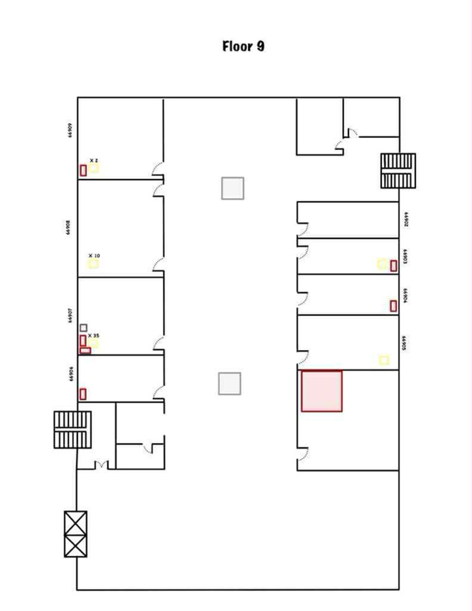
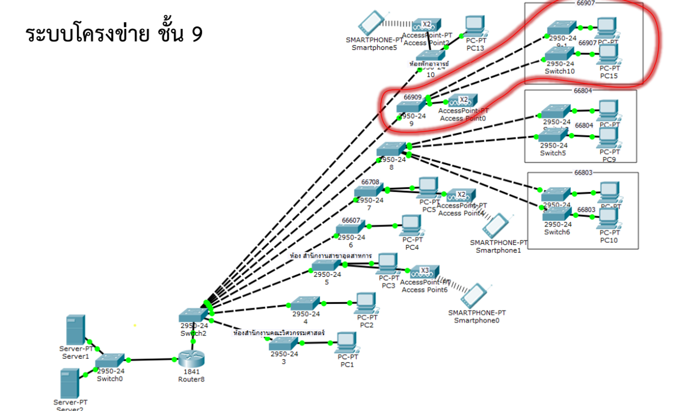

ตึกวิศวกรรมชั้นที่ 9

แผนผังชั้น 9 ประกอบด้วย:
1. ตู้ Rack จำนวน 1 ตู้
2. คอมพิวเตอร์ จำนวน 49 เครื่อง
- ห้อง 66903 จำนวน 1 เครื่อง
- ห้อง 66905 จำนวน 1 เครื่อง
- ห้อง 66907 จำนวน 35 เครื่อง
- ห้อง 66908 จำนวน 10 เครื่อง
- ห้อง 66909 จำนวน 2 เครื่อง
3. Access Point จำนวน 2 ตัว

แผนภาพโครงข่าย
ชั้น 9: ชั้นเชื่อมต่อแบบผสม (Mixed Environment) เป็นชั้นที่มีการใช้งานหลากหลายทั้งแบบใช้สายและไร้สาย และมีอุปกรณ์กระจายตัวในหลายจุด
หน้าที่หลัก: ให้บริการเครือข่ายที่ยืดหยุ่น รองรับหลายพื้นที่การใช้งาน
อุปกรณ์สำคัญประกอบด้วย:
- Switch Cisco Catalyst 9200: 3 ตัว สำหรับกระจายการเชื่อมต่อแบบใช้สายในหลายโซน
- Access Point Cisco Catalyst: 2 ตัว สำหรับให้บริการ Wi-Fi
- Rack 9U และ 6U: มีตู้ Rack 2 ขนาด เพื่อติดตั้งในจุดหลักและจุดย่อย